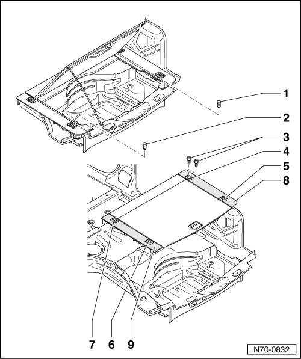

Carpet: Service and Repair
Luggage Compartment Floor
Removing
- Open spare wheel cover.
- Remove bolts - 1 - and - 2 -.
- Close spare wheel cover.
- Remove 2 bolts - 3 - and remove securing eye - 4 -.
- Remove the securing eyes - 5 -, - 6 - and - 7 - as described.
- Remove spare wheel cover, right cover support - 8 - and left cover support - 9 - from vehicle.

Installing
- Perform the steps used for removal in reverse order.
• Align components before bolting them so that the gap size is equal all around.